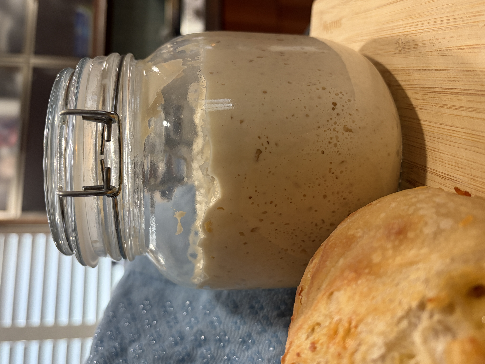

WELCOME TO FROM MATT
STARTING TOGETHER
Learn, bake, and grow with a commmunity that helps support and guide the love and fustrations that can come with learing how to bake sourdough.
EXPLORE THE GALLERY
Welcome In
Learn, Bake, Share
From Matt is for new and experienced bakers who want to learn together. Look through the gallery, ask questions, and find unique resources from experiences provided by the From Matt community!
About
Hello! Your sourdough journey starts here! As a beginner, I turned to social media and the web to learn how to make a loaf. I was lucky enough to receive a starter at the start of my baking adventure, but I did not know how to use it properly. At one point, I thought I had accidentally killed my starter and made a new one by following an Instagram video. After much confusion, I realized I had actually made sourdough starter. Today, I still use that same starter to make amazing loaves my friends, neighbors, and family enjoy. I wanted to create a community that welcomes sourdough bakers while helping beginners share baking experiences, recipes, and troubleshooting tips.